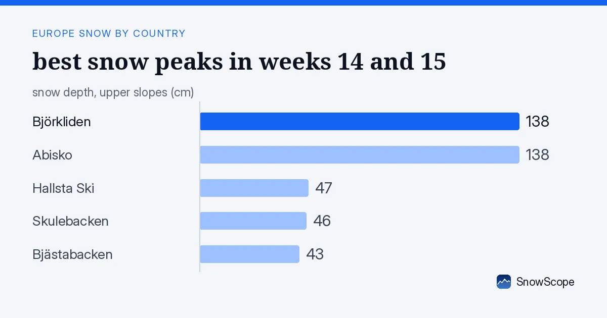
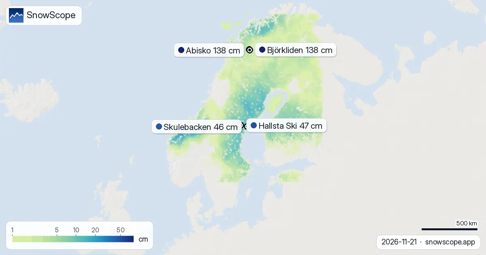
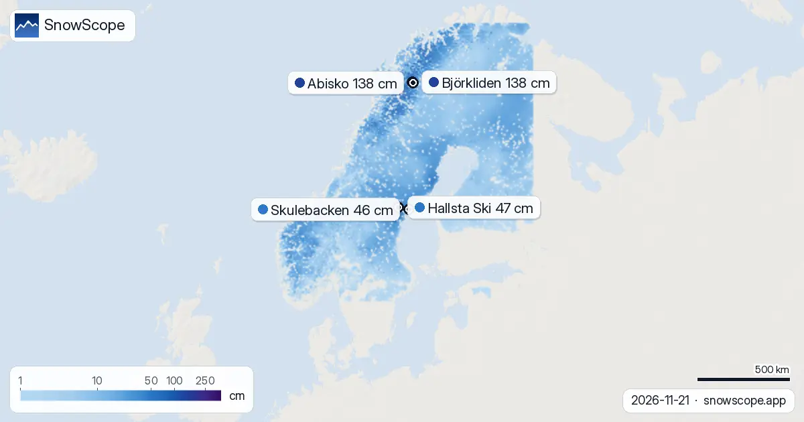

Björkliden leads Sweden with 138 cm: best snow peaks in weeks 14 and 15
Björkliden holds the top position in Sweden with 138 cm of snow, well ahead of the other measured resorts. Early April and mid-April are when snow depths reach their seasonal peak across Swedish ski areas, so conditions now are building toward the winter's best month.
See the live snow forecast for Björkliden in the SnowScope appSnow depth, powder alerts and the 3D map, free.
Where the depth stands today
The gap widens quickly below them: Hallsta Ski holds 47 cm, Skulebacken 46 cm, and Bjästabacken 43 cm. All 74 of Sweden's 75 ski areas now have measurable snow cover, with 95 percent of the mapped mountain region white.
Depth varies sharply by height. Below 500 m, the mean is just 15 cm and snow covers 94 percent of the area. At 500–1000 m, we measure 16 cm across a fully covered zone. Above 1000 m the story changes: 1000–1500 m averages 42 cm, and 1500–2000 m holds 67 cm. The mountains store three times more snow than the low foothills.
In the past week, the northern resorts have kept their lead steady. Björkliden and Abisko each gained only 2 cm in three days, a sign that the heaviest snow fell earlier in the week. Central Sweden's lower resorts, by contrast, saw much fresher falls: Bjästabacken picked up 25 cm in 72 hours, Skulebacken 20 cm, and Hallsta Ski 15 cm. The wet Atlantic systems are feeding the mid-country slopes right now.
| Resort | Today | Normal for the date | Share of normal |
|---|---|---|---|
| Björkliden | 47 cm | 45 cm | 104 % |
| Abisko | 34 cm | 28 cm | 121 % |
| Hallsta Ski | 44 cm | 7 cm | 629 % |
| Skulebacken | 29 cm | 3 cm | 967 % |
| Bjästabacken | 33 cm | 3 cm | 1100 % |

When snow peaks—and why it matters now
Björkliden's historical record shows weeks 14, 15, and 16 as the snowiest—that is, early April, mid-April, and late April. We know this from decades of past winters. Right now, on 21 November, Björkliden holds 47 cm of snow at the measurement height of 678 m; the long-term median for this date is 45 cm. The resort is running 4 percent above normal, so the season has started on track.
The five resorts we track show a split picture. Abisko is 21 percent above its usual November depth. But lower sites are exceptional: Hallsta Ski sits at 44 cm when November typically sees 7 cm—that is 629 percent above normal. Skulebacken and Bjästabacken are even more extreme, at 967 and 1100 percent of their usual November depth. Early-season snow in lowland areas is thin and patchy in a normal year; this year, early autumn storms have filled them well.

Best conditions ahead
November through March are building months. The deepest, most stable snow arrives from January onward and peaks in April. For skiers planning ahead, mid-April (weeks 14–15) is historically when Björkliden offers its best combination of depth and reliability. Right now we are in the ramp-up: good conditions exist, but the base will thicken and smooth over the next weeks.
In the second week of December (8–14 December), the forecast shows up to 13 cm of new snow across the region. That pushes the season forward. The outlook for late November and early December is gentler: 11 cm falls expected as the snowiest single day on 22 November.
What the last week shows
Snow coverage expanded by 37,560 km² in seven days—a jump from 274,120 km² to 311,680 km² today. That is 14 percent growth in white area, driven by the succession of Atlantic lows that have swept the country. Yesterday's small loss of 260 km² reflects a marginal melt in the warmest hours; the trend remains upward.
Björkliden has held first place for four of the last six days. On 16 and 17 November, Abisko led at 129–130 cm, but fresh snow on higher ground pushed Björkliden ahead by 18 and 19 November. The northern mountains are receiving the most organized snowfall, while central Sweden's modest hills are catching the runoff moisture and gaining depth from the same storms.
Height and snow stability
The elevation bands reveal the mountain structure. The transition at 1000 m is marked: below that, snow averages 16 cm across the low-height belt; above it, the depth doubles and then triples. At the highest band, 1500–2000 m, we measure 67 cm—enough for a solid early winter base. This is where the ski patrol works; this is where rocks and trees stay buried.
All zones above 500 m carry 100 percent snow cover. Only the lowest band, 0–500 m, shows 94 percent cover—six in every hundred hectares still see bare ground. These are the marginal foothills where early season is always a gamble. For skiers, the message is clear: go high and you find consistent snow; go low and check conditions first.
Looking north and forward
Norway's leader, Riksgränsen, stands at 167 cm—29 cm deeper than Björkliden. That gap reflects Norway's higher peaks and earlier winter. Finland's highest resort, Pyhä, sits at 30 cm. Sweden spans the middle ground: good snow at altitude in the north, exceptional early-season depth in the central low areas.
The coming week will add incrementally. The 22 November storm brings 6 cm and sets the new-snow bar; the following days ease off. By 24 November, the next 3-day total for Björkliden is forecast at 4 cm. It is a steady accumulation, not a dump. That suits early November: even thin snow on a solid base grows into stable cover once it bonds. Check the official avalanche bulletin before any off-piste venture; early-season snow can be unstable on steep terrain despite looking solid from above.
Tips for skiers
- High ground (1000 m and above) holds 42–67 cm and offers the most reliable skiing. Low foothills below 500 m average 15 cm—expect rocks and thin patches. Plan routes accordingly.
- Björkliden and Abisko lead the country with 138 cm each. Both are worth the journey north if you seek established base and depth. Central resorts like Hallsta Ski offer novelty snow (47 cm in 72 hours) but build from thinner baseline.
- Early April and mid-April (weeks 14–15) are historically the peak snow months. Build your November skiing into a winter plan rather than chasing this moment as the season's best.
- Before heading off-piste anywhere, consult the official avalanche bulletin. Early-season snow can bond poorly to old ground and slide on steep slopes despite looking stable.
- The next significant snowfall arrives around 22 November (up to 6 cm). After that, accumulation slows. If you are planning a trip in the next two weeks, do not expect sudden depth gains—expect solid maintenance of what is here.
About these numbers
Resort snow depths are the deepest snow on the resort's upper slopes on the date shown; they are estimates for an area, not a measurement at one point. Forecasts can change. Always read the official avalanche bulletin before going off-piste.
Cite this report
For research, teaching or the press: the numbers and charts are free to reuse under CC BY 4.0 with this citation.
SnowScope (2026), Björkliden leads Sweden with 138 cm: best snow peaks in weeks 14 and 15, https://snowscope.app/blog/en/2026/11/sweden-when-to-book-ski-trip-21-november-2026.html, accessed 2026-11-21
SnowScope (Atlas Labs). (2026, November 21). Björkliden leads Sweden with 138 cm: best snow peaks in weeks 14 and 15. SnowScope snow reports. https://snowscope.app/blog/en/2026/11/sweden-when-to-book-ski-trip-21-november-2026.html
BibTeX
@misc{snowscope2026swedenwhentobookskitrip2,
author = {{SnowScope (Atlas Labs)}},
title = {Björkliden leads Sweden with 138 cm: best snow peaks in weeks 14 and 15},
year = {2026},
month = nov,
howpublished = {\url{https://snowscope.app/blog/en/2026/11/sweden-when-to-book-ski-trip-21-november-2026.html}},
note = {Published 2026-11-21 12:46 UTC; accessed 2026-11-21}
}· CC BY 4.0 · Methods, data and tools →
Björkliden: snow and temperature by height, this winter vs last (tools) →
Follow Björkliden
Free: a message when fresh snow is coming, and the forecast every morning.
More snow reports

From 13 to 19 November 2026 Slovenia got the most snow and kept it; Serbia and Croatia had a deep but short white weekend; Montenegro only on Durmitor; Bulgaria almost none. The ranking, with links to each country report.

Tornik on Zlatibor had up to 39 cm on its upper slopes on 15 November 2026; by Wednesday it had melted. Kopaonik barely turned white. The week day by day and what comes next.

Savin Kuk above Žabljak picked up 22 cm of snow from 13 to 19 November and still has 6 cm today. Kolašin 1450 and 1600 are bare. The week day by day, and the next chances.